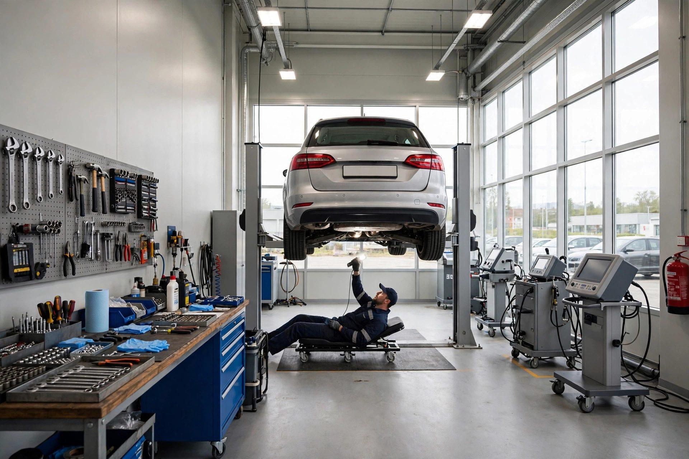
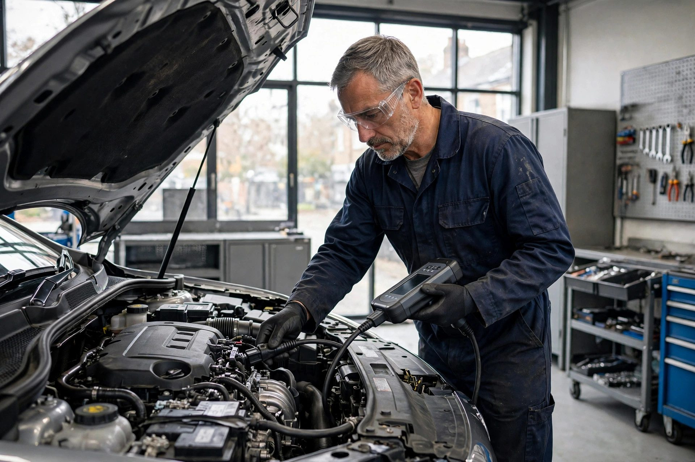
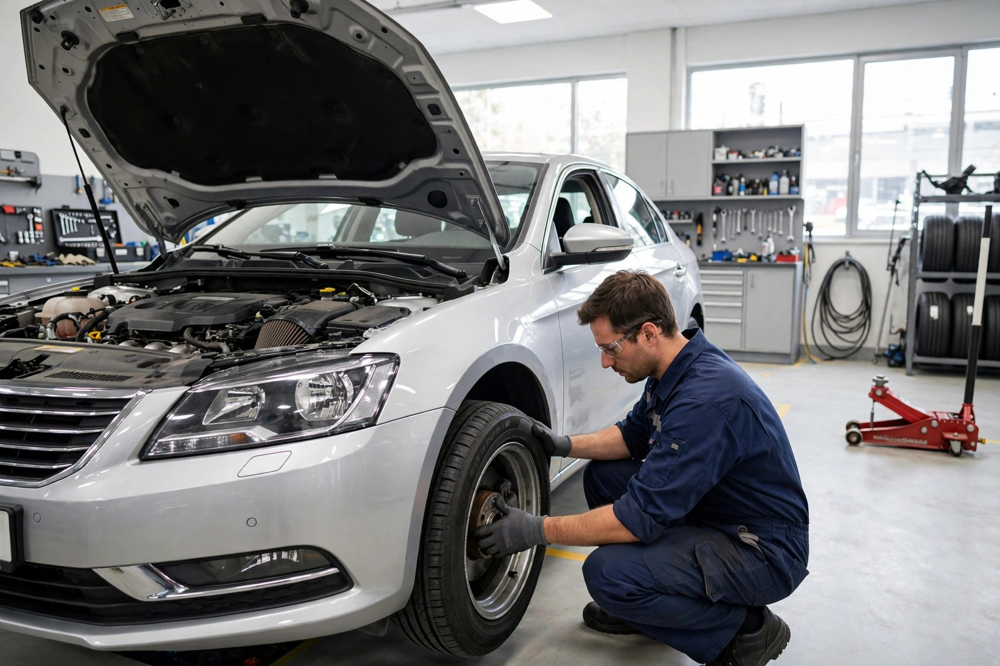
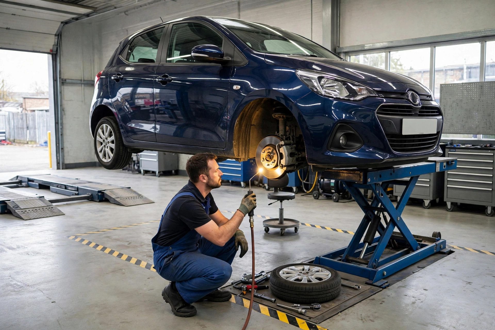

MOT testing
Full MOT tests in our approved DVSA testing centre — and if it needs work, the retest is free.

Radcliffe, Manchester · MOT & car servicing for 30+ years
Approved DVSA MOT testing centre with free retests — rated 4.9/5 from 110 reviews by local drivers across Radcliffe, Little Lever, Bolton and Greater Manchester.
Approved DVSA MOT testing centre
Cars, vans and light commercial vehicles of all makes and models — done right by a team with 30+ years of experience.
What we do
Full MOT tests in our approved DVSA testing centre — and if it needs work, the retest is free.
Servicing for all makes and models — cars, vans and light commercials, at dealer standard without dealer prices.
Engine management issues, engine diagnostics and water leaks diagnosed and repaired — we find the real problem.
Brake replacements, clutch replacement, exhaust systems, steering, suspension and tracking.
Tyre supply and fitting, air conditioning service, timing belts, water pumps and batteries.
Bodywork and accident repairs, welding and paint — plus window repairs and registration plates.

Why choose us
Over 30 years of servicing and repairing cars, vans and light commercial vehicles in Radcliffe. We believe in simple things: honest advice, fair prices and quality work you can rely on.
The workshop in action


Word on the street
Good to know
An MOT is an annual safety test required for most vehicles over 3 years old. If yours is due, book it with us — and remember, our retests are free.
Yes — if your vehicle fails its MOT with us and we carry out the repair work, the retest is on the house.
Yes — cars, vans and light commercial vehicles of all makes and models, to dealer-level standards.
Just call us on 0161 724 4201 or drop by at 20 Radcliffe Moor Road, Radcliffe — you'll find us next to the BP fuel station.
Come and see us